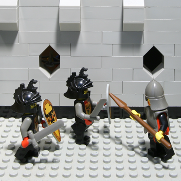
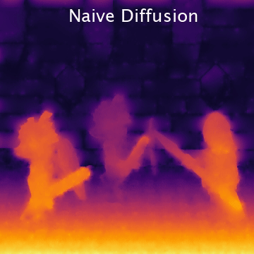

 
Depth estimation tries to obtain 3D scene geometry from low-dimensional data like 2D images. This is a vital operation in computer vision and any general solution must preserve all depth information of potential relevance to support higher-level tasks. For scenes with well-defined depth, this work shows that multi-view edges can encode all relevant information---that multi-view edges are complete. For this, we follow Elder's complementary work on the completeness of 2D edges for image reconstruction. We deploy an image-space geometric representation: an encoding of multi-view scene edges as constraints and a diffusion reconstruction method for inverting this code into depth maps. Due to inaccurate constraints, diffusion-based methods have previously underperformed against deep learning methods; however, we will reassess the value of diffusion-based methods and show their competitiveness without requiring training data. To begin, we work with structured light fields and Epipolar Plane Images (EPIs). EPIs present high-gradient edges in the angular domain: with correct processing, EPIs provide depth constraints with accurate occlusion boundaries and view consistency. Then, we present a differentiable representation form that allows the constraints and the diffusion reconstruction to be optimized in an unsupervised way via a multi-view reconstruction loss. This is based around point splatting via radiative transport, and extends to unstructured multi-view images. We evaluate our reconstructions for accuracy, occlusion handling, view consistency, and sparsity to show that they retain the geometric information required for higher-level tasks.
This research was presented as one of the keynote talks in the CVPR 2023 Workshop on Light Fields for Computer Vision (LFNAT).
@article{khan2024incomplete,
title={Are Multi-view Edges Incomplete for Depth Estimation?},
author={Numair Khan and Min H. Kim and James Tompkin},
journal={International Journal on Computer Vision},
year={2024}
This IJCV paper is a journal version that brings together and conceptually frames a series of works in depth estimation.
We thank the reviewers for their detailed feedback. James Tompkin thanks NSF CAREER-2144956 and Cognex, Numair Khan thanks an Andy van Dam PhD Fellowship, and Min H. Kim acknowledges the support of Korea NRF grant (2019R1A2C3007229).